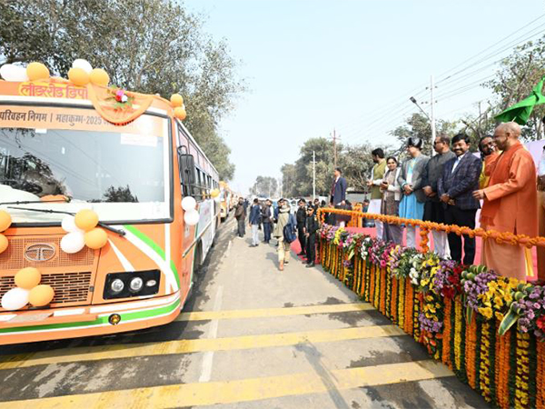

InfrastructureThe Government of Uttar Pradesh have set up a temporary city covering 4,000 hectares (40 km2) to accommodate the pilgrims attending the event. To expand the available land, four dredging machines were used to reclaim 26 additional hectares (0.26 km2), significantly increasing the capacity to three times more than in 2019 Prayag Ardh Kumbh Mela. Prayagraj is also embracing smart city technologies to enhance urban living. The total length of the ghats is 12 km (7.5 mi), and the surrounding area has been divided into 25 sectors. About 150,000 tents were established to provide accommodation. Nearly 83 projects were completed at a cost of ₹14.28 billion (US$160 million) for the event. | ||
TransportParking facilities cover an area of 1,850 hectares (18.5 km2). The total road length within the area was increased over 450 km (280 mi) to improve accessibility.[4] Indian Railways has announced an increase in the number of coaches in key trains, such as the Prayagraj Express and Lucknow Mail, to accommodate the expected influx of pilgrims during the Mahakumbh 2025.[19] Indian Railways operated special trains to various railway stations in the area. About 360 trains including 190 special trains, 110 regular trains and 60 MEMU trains to cater to the pilgrims on the day of Mauni Amavasya on 29 January 2025 |  | |
 |
Health and sanitationThe Prayagraj Mela Committee set up 150,000 toilets and urinals in the Maha Kumbh area, and a monitoring system was launched to track sanitation levels in toilets. About 10,000 sanitation workers were engaged for cleaning activity.[22] One cleaner was allocated for every ten toilets with a supervisor monitoring a batch of ten such personnel.[23] The Uttar Pradesh State Government deputed 500 dedicated Ganga Praharis for cleaning the river during Maha Kumbh.[24] Health camps and medical support : Mobile health units and emergency medical services are deployed to handle any health emergencies. | |
Safety and securityAbout 40,000 police officers from the Uttar Pradesh Police and surveillance systems were deployed for the event. Additionally, forces from the Uttar Pradesh Provincial Armed Constabulary (UP-PAC), National Disaster Response Force, and Central Armed Police Forces assisted in maintaining security.[citation needed] A network of around 2,300 cameras provided round-the-clock monitoring, enhancing surveillance across the Mela area | ||
IncidentsOn 19 January a fire caused by an exploding gas cylinder destroyed at least 18 temporary tents at the festival grounds. No injuries were reported.[33] On 15 February an SUV carrying pilgrims from Chhattisgarh heading to the festival collided with a bus in Prayagraj, killing all ten people aboard the SUV. | ||
FinancialsThe budget for the event was about ₹63.82 billion (US$740 million) and it is estimated that the event will generate a revenue of more than ₹2 trillion (US$23 billion | ||